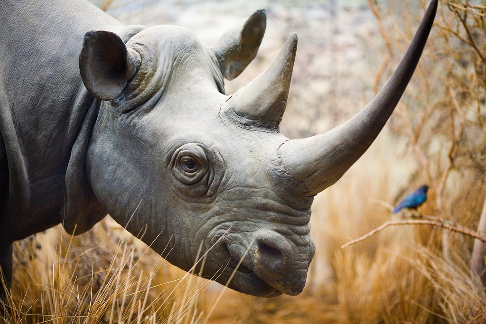
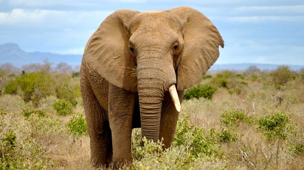
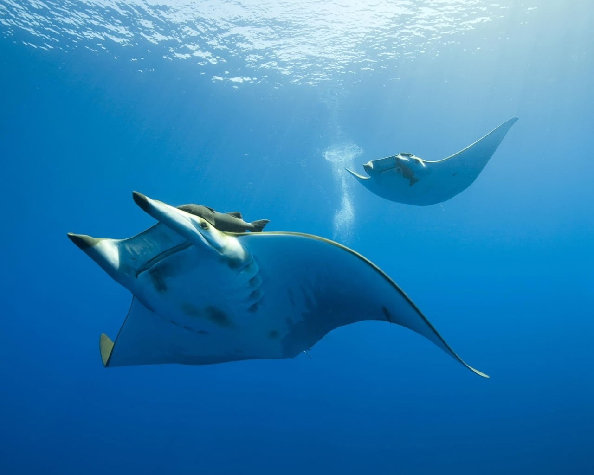
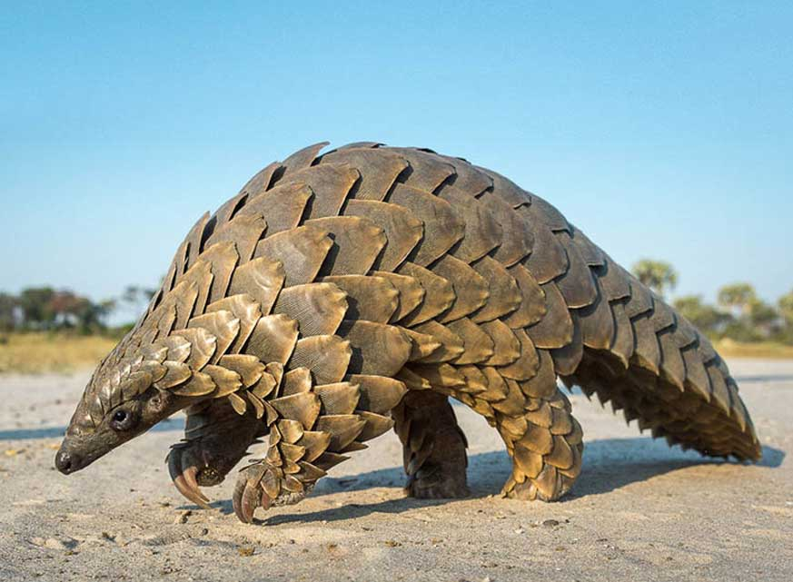
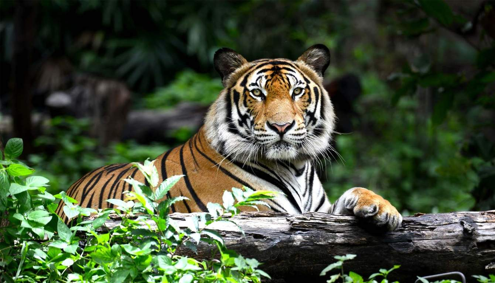

Dyr
Neshorn
Krypskyting av neshorn i Afrika har økt noe voldsomt siden 2007. I fjor ble mer enn 1.370 dyr skutt ulovlig på grunn av hornene sine over hele kontinentet – flertallet av dem i Sør-Afrika, hvor over 80 prosent av verdens gjenværende neshorn holder til. Krypskytingen organiseres av internasjonale kriminelle nettverk og drives av en eksplosiv etterspørsel i Vietnam. Det siste tiåret har Vietnam opplevd rask økonomisk vekst – og dermed også fått et voksende marked for produkter fra ville dyr. Horn fra neshorn blir i økende grad brukt som et statussymbol blant en velstående elite, i forbindelse med forretningsavtaler og i sosiale sammenhenger, hvor hornet blir malt til pulver, blandet med vann og drukket.
Selv om det har vært et forbud mot internasjonal kommersiell handel med horn fra neshorn siden 1975, legger svake lovverk og utilstrekkelig håndhevelse av dem fortsatt til rette for krypskyting og ulovlig handel. Vietnam er verdens største marked for ulovlige horn fra neshorn, og kommer til å havne i CITES-søkelyset for ikke å ha slått ned på de kriminelle nettverkene og ført de involverte for retten. Selv om det finnes omfattende bevis for åpenlys omsetning av horn fra neshorn, har ikke vietnamesiske myndigheter gjort nevneverdige beslag, og har heller ikke rapportert at slike saker er kommet for retten. Det står høyt på agendaen at Vietnam forplikter seg til å vedta nye lover og regler slik at ulovlig handel med truede arter blir behandlet som alvorlig kriminalitet med en minimumsstraff på fire år i fengsel, at lovene likestiller falske horn fra neshorn med ekte, og at myndighetene arresterer og straffeforfølger personer som er involvert i den ulovlige handelen.
Om ikke landet forplikter seg til dette, ønsker WWF at CITES erklærer et forbud mot handel med Vitenam innenfor alle artskategorier som reguleres av konvensjonen. CITES må også oppfordre andre relevante land på det sterkeste om å gjøre mer for å stanse den ulovlige handelen med horn fra neshorn.
Sør-Afrika har brukt betraktelige ressurser på å stanse krypskytingen, med noen grad av suksess, men det er behov for langsiktige løsninger som involverer lokalsamfunn og deres behov, og at man får bukt med de internasjonale kriminelle nettverkene. Mosambik må trappe opp arbeidet med å hindre smuglere i å bruke landet som transit, og Kina, hvor det også er store markeder for horn fra neshorn, må jobbe for å redusere etterspørselen. CITES er nødt til å opprettholde press på disse landene, spesielt Vietnam – som må gå med på konkrete, tidfestede tiltak for å unngå å få sanksjoner rette mot seg.
WWF er motstander av å fjerne det nåværende forbudet mot internasjonal handel med horn fra neshorn. Noen mener at å tillate lovlig internasjonal handel vil undergrave de ulovlige markedene og gi sårt tiltrengte penger til arbeidet for å beskytte neshornene. Det er et slikt standpunkt som visstnok har motivert Swaziland til å søke tillatelse fra CITES til å drive begrenset, lovlig handel. WWF mener imidlertid at dette vil være et skritt tilbake, på grunn av de mange utfordringene knyttet til myndighetsutøvelse og håndheving av lovverk som ville komme til overflaten i slike mulige markeder. Dette er ikke tidspunktet for å ta sjanser med neshornenes fremtid.
Afrikanske elefanter
Mellom 20.000 og 30.000 afrikanske elefanter blir hvert år drept av krypskyttere på grunn av etterspørsel på markeder i Asia – primært i Kina, men også i Thailand, Laos og Vietnam. Dette til tross for et internasjonalt forbud mot internasjonal kommersiell handel med elfenben. Selv om noen bestander er stabilisert, synker totalantallet elefanter. Ettersom et internasjonalt forbud allerede finnes, må CITES konsentrere seg om de tiltakene som trengs for effektivt å håndheve forbudet og å ta tak i bakenforliggende faktorer som bidrar til den ulovlige elfenbenshandelen: Korrupsjon, svakt lovverk, mangel på håndhevelse i landene som befinner seg i den ulovlige handelskjeden, samt en etterspørsel i Asia som er ute av kontroll.
WWF er av den oppfatning at det nåværende globale handelsforbudet alene ikke vil løse elefantkrisen, siden etterspørselen etter elfenben i det store og hele drives av ulovlig handel og ikke minst blir lagt til rette for av svak håndhevelse av lovverket og den store etterspørselen i de asiatiske markedene (knyttet til fremveksten av en velstående samfunnsklasse). Derfor mener WWF at naturvernarbeid for elefanter bør baseres på solide, nasjonale handlingsplaner i relevante land.
WWF ønsker at CITES skal sikre at de 19 afrikanske og asiatiske landene som er mest innblandet i den ulovlige handelen implementerer sine nasjonale elfenbenhandlingsplaner – som er i ferd med å gi resultater. Det er behov for uavhengige gjennomganger av fremgangen i hvert land, og land som unnlater å gjøre noe, burde risikere CITES-sanksjoner.
WWF støtter ikke forslagene om å åpne den internasjonale handelen med elfenben, selv om den skulle bli begrenset til lagervare fra enkeltland som Namibia, som forvalter sine elefanter på en tilfredsstillende måte. Slik situasjonen er nå, støtter WWF ikke:
Gjenopptakelse av den internasjonale kommersielle handelen med elfenben
Forbruk av elfenbenprodukter.
WWF stiller seg imidlertid bak stenging av nasjonale elfenbenmarkeder over hele verden.
WWF støtter ikke forslagene om å øke beskyttelsen av alle afrikanske elefanter ved å flytte dem fra Appendix II til Appendix I; vi mener at de nåværende bestemmelsene i CITES under Appendix II er tilstrekkelige for å forhindre internasjonal kommersiell handel med elfenben. Viktigst av alt, den foreslåtte endringen er ikke i henhold til vitenskapelige kriterier og kan utilsiktet åpne dørene for handel. WWF er også bekymret for at en debatt for og mot disse forslagene vil splitte toppmøtet på et tidspunkt hvor verden trenger å forenes i kampen mot krypskytterne og de som driver med ulovlig handel.
Haier og rokker
Overfiske er en alvorlig trussel mot mange haier og deres nære slektninger, rokkene. En ikke-bærekraftig etterspørsel etter haifinner og gjellebuer fra visse rokker truer også noen av artene, særlig de som har lav reproduksjon. I forbindelse med det forrige CITES-toppmøtet, ble de store hammerhaiene, oceanisk hvittipp hai, håbrann og djevelrokker gitt en høy grad av global beskyttelse ved at de ble listet på Appendix II, som bare tillater regulert, bærekraftig handel. Men mange andre haier og rokker er i fare.
Mot et slikt bakteppe, ønsker WWF at CITES også lister silkehaier og revehaier på Appendix II. WWF ber også om økt beskyttelse for djevelrokker.
Pangoliner
Pangoliner er ansett å være det dyret i verden som er mest utsatt for krypskyting. Rundt 1 million av dem er blitt rammet av den ulovlige handelen det siste tiåret, på grunn av etterspørsel etter kjøttet og de karakteriske skallene – som blir brukt i tradisjonell kinesisk medisin. Nå som de fire asiatiske artene har sunket dramatisk i antall, blir det asiatiske markedet i stor grad fylt med afrikanske pangoliner. Nåværende CITES-regler begrenser handel med de asiatiske artene, men tillater regulert handel med de fire artene fra Afrika.
Alle de åtte pangolineartene i verden bør få høyest mulig grad av beskyttelse – det vil si bli listet på Appendix I, noe som tilsier et totalt forbud mot internasjonal handel med pangoliner. I tillegg bør CITES komme frem til et sett nye tiltak som kan underbygge og styrke forbudet – inkludert globalt samarbeid rundt håndhevelse, redusert etterspørsel og inntektsgivende arbeid.
Tigere
I 2010 hadde krypskyting og tap av leveområder redusert bestanden av ville tigere til 3.200 dyr, over halvparten av dem i India. De seneste anslagene viser en økning til rundt 3.900. Denne positive utviklingen er hovedsakelig resultat av arbeid gjort i India, Nepal og Russland. Tilstanden for de øvrige bestandene i Sørøst-Asia gir fortsatt grunn til bekymring. I mellomtiden utgjør tigeroppdratt i Kina og deler av Sørøst-Asia en stadig mer kompliserende faktor, siden også disse havner på markeder for ulovlig handel og dermed bidrar til å holde etterspørselen oppe.
Det finnes allerede et omfattende regelverk knyttet til tigrene, inkludert et globalt forbud mot kommersiell handel samt lovverk som begrenser nasjonale markeder. Det er imidlertid bevis for at enkelt land ikke gjør alt de kan for å overholde regelverket. Medlemmene av CITES må bli enige om en tydelig, formell prosess for å undersøke hvorvidt disse landene gjør noe for å følge opp regelverket, inkludert et spesielt søkelys på tigeroppdrett.
WWF mener at oppdrett av tigere er en del av problemet, ikke løsningen. Oppdrettstigere kan aldri konkurrere økonomisk med tigerproduktene som er et resultat av krypskyting og ulovlig handel, blant annet fordi forbrukerne fortrekker den ville varianten. Derfor bør ikke de nåværende CITES-reglene om at tigere ikke bør drettes opp for kommersielt salg, bli noe svakere.
